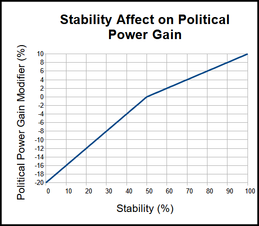
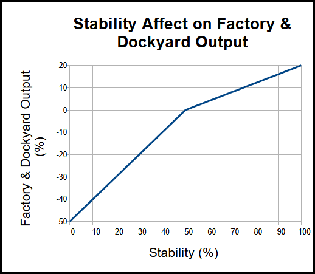
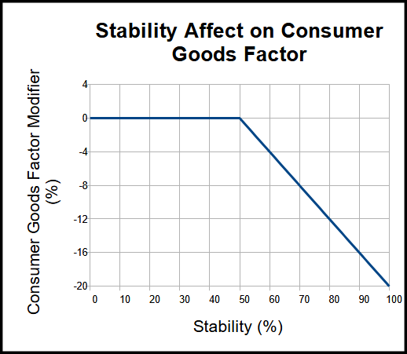
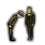

政府
原页面：Government
政府是玩家国内所发生情况的政治体现。
政治点数
 政治点数代表一国领导人对内政的影响力大小。同时可储存的政治点数介于 -500 与 2000 之间。[1]
政治点数代表一国领导人对内政的影响力大小。同时可储存的政治点数介于 -500 与 2000 之间。[1]
被动增长
在「常规」难度下，政治点数以每天 +2 的基础速率增长。[1]其他难度等级分别附加百分比加成与惩罚。
| 难度 | 修正 |
|---|---|
| 民用 | +50% |
| 新兵 | +25% |
| 正规 | +0% |
| 老兵 | -10% |
| 精锐 | -15% |
政治点数的增长速率还受到国家稳定度的影响。稳定度为 0% 时，政治点数获取受 -50% 修正；稳定度为 100% 时受 +20% 修正。稳定度为 50% 时，政治点数获取没有修正。
拥有修正的领袖
- 主条目：国家领导人特质
某些领袖拥有特质，可为其国家提供政治点数的加成或减益。例如：
| 国家 | 领袖 | 特质（消歧义） | 修正项 |
|---|---|---|---|
| 阿道夫·希特勒 | 元首（Der Führer） |
| |
| 约瑟夫·斯大林 | 钢铁之心 |
| |
| 爱德华八世 | 缺乏经验的帝国主义者 |
|
国策
- 主条目：国策
国策是为了在钢铁雄心 IV 中为决策提供替代选项而设计的。同一时间只能激活一个国策；每个焦点都需要特定天数，通常为 70 天。一个焦点每天需要消耗一点政治点数。完成后，它们会提供增益或引发事件。主要国家（以及包含在可下载内容扩展包中的国家）拥有各自独特的国策树，而其他国家则使用通用国策树，
理念
- 主条目：理念
通过理念管理政府需要花费政治点数。这些理念以法令、部长和公司的形式出现。通过或移除理念都要花费政治点数，添加一个理念通常需要 150 点。
指挥官
- 主条目：指挥官
政治点数可用于培养新的指挥官来指挥师。花费随玩家已拥有的指挥官数量递增，起始为 5，每增加一名指挥官再加 5。海军指挥官以相同的机制购买，费率与陆军指挥官相同。
外交
- 主条目：外交
多种外交互动都需要政治点数，包括制造战争目标、保障独立或改善关系。
使用「征服」宣战理由对省份制造战争目标需花费 50 政治点数；若目标国家拥有「中立外交政策」国家精神，则增加 5。每次为「征服」战争目标添加一个州，花费增加 10 政治点数。使用「夺回核心州」宣战理由制造战争目标需花费 25 政治点数。
一次保障独立需花费 25 政治点数，之后每次保障都增加同样的数额（第一次制造战争目标为 25 政治点数，第二次为 50 政治点数，依此类推）。
改善关系的启动花费为 10 政治点数，之后对意识形态相同的国家每天基础花费 0.2 政治点数。若改善关系的目标意识形态不同，则每天花费 0.4 政治点数。例如，德国若与法西斯主义的 意大利改善关系，每天花费 0.2 政治点数，但与民主主义的英国
意大利改善关系，每天花费 0.2 政治点数，但与民主主义的英国 改善关系则每天花费 0.4 政治点数。
改善关系则每天花费 0.4 政治点数。
决议
决议介于国策与事件之间，其效果可以是即时生效，也可以是限时生效。
点击顶栏中的法槌图标，或按下Shift+Q，即可打开「决议」标签页。
意识形态
- 主条目：意识形态
玩家的政府类型由其国家领袖和其意识形态决定。
选举
大多数民主国家和部分不结盟国家会举行选举，游戏开始时 巴拉圭
巴拉圭 （）、
（）、 萨尔瓦多（）与秘鲁
萨尔瓦多（）与秘鲁 （）亦然。共产主义
（）亦然。共产主义 美国、共产主义／法西斯主义墨西哥
美国、共产主义／法西斯主义墨西哥 、法西斯主义
、法西斯主义 波兰以及中国共产党可通过其国策获得选举。两次选举之间的间隔因国家而异，从一年到八年不等。
波兰以及中国共产党可通过其国策获得选举。两次选举之间的间隔因国家而异，从一年到八年不等。


玩家可以在「政治」或「外交」标签页中查看下一次选举的时间。选举让玩家能够以非暴力方式将政权转交给其他意识形态。若某政党在选举中支持率超过 50%，该党就会赢得选举并成为新的执政党。选举还可能触发其他一些Election事件。 美国、西班牙
美国、西班牙 和希腊拥有独特的选举事件，因为其选举会成为全国性事务。
和希腊拥有独特的选举事件，因为其选举会成为全国性事务。
国家精神
- 主条目：国家精神
国家精神是特殊的理念，会提供加成和/或减益。这些理念可以通过该国的国策树或某些事件链获得。
虽然其中许多是国家专属的，但也有一些性质上更为通用，可适用于多个国家（例如通用国策树中的那些）。
稳定度
 稳定度以 0% 至 100% 的百分比表示[2]，代表民众对当前政府的支持程度。稳定度有多种影响：稳定度高时国家获得生产加成，稳定度低时各种危机可能重创国家。详见下文。
稳定度以 0% 至 100% 的百分比表示[2]，代表民众对当前政府的支持程度。稳定度有多种影响：稳定度高时国家获得生产加成，稳定度低时各种危机可能重创国家。详见下文。
稳定度高于50%[2]会提供以下加成，加成从 50% 时的无到 100% 时的全额线性增长。稳定度为 100% 时，加成为：
稳定度低于50%会提供以下惩罚，惩罚从 50% 时的无到 0% 时的全额线性增长。稳定度为 0% 时，惩罚为：

此外，稳定度还会影响被占领土的抵抗度目标：稳定度 100% 时为 0%，稳定度 0% 时升至

+20%。[4]稳定度的效果会向下取整到最接近的整数。例如，81.6% 的稳定度与 81.0% 带来相同的加成，且两者都显示为 81%。游戏内部以更高的精度存储稳定度。
若玩家处于战争状态，低稳定度可能引发危机，最严重可导致内战。
稳定度的计算方式是在基础稳定度之上叠加永久稳定度修正。基础稳定度的最小值和最大值与常规稳定度相同，并且可以被各种事件、国策和决议修改（例如改善工人条件）：一旦达到下限或上限，就无法再改变。
随后，永久稳定度修正以加法方式作用于基础稳定度。若总稳定度超过上限或低于下限，就会被限制在最接近的可行数值。不过，来自永久修正的额外稳定度不会丢失，可以作为抵御负面稳定度修正的缓冲。
以下是稳定度修正：
- -20%[5]处于战争状态。
- 战时由战争支持度带来的0%至-30%。从0%（100%
 战争支持度）到-30%（0%战争支持度）线性变化。[6]
战争支持度）到-30%（0%战争支持度）线性变化。[6] - 0%到+15%，由执政党意识形态支持度决定：0%为0%支持度时的取值，15%[7]为100%支持度时的取值。
- 该效果最多可提升至+25%，条件是拥有

政治忠诚军官团精神。
- 该效果最多可提升至+25%，条件是拥有
- 拥有「受欢迎的名义领袖」统治者特质或政治顾问时获得的+15%（两者可以叠加）
- +60%统治者修正，仅对
 日本生效
日本生效
这意味着，即使拥有足够的永久稳定度修正，一个国家的总稳定度也可能永远无法达到上限。大多数国家都是如此；以 100% 基础稳定度、100% 执政党意识形态支持率（提供 +15% 稳定度修正）且处于战争状态（提供 -20% 稳定度修正）为例，该国的总稳定度将停留在 95%，无法通过提高基础稳定度来增加（因为基础稳定度已达 100%），必须依靠更多正面稳定度修正或结束当前战争（从而移除 -20% 稳定度修正）才能达到 100% 稳定度。
战争支持度
战争支持度以 0% 到 100% 的百分比表示，代表民众承受战争困苦的意愿。多项法令和国策只有在战争支持度达到足够水平时才能通过。战争支持度为 50% 时不提供任何增益，高于该值获得加成，低于该值则承受负面影响。[8]
战争支持度达到最大值时，最多提供以下加成：
- 动员速度：+30%
- 核心领土上的陆军攻击：10%
- 核心领土上的陆军防御：10%
- 指挥点数获取：+50%[9]
战争支持度处于最小值时，最多带来以下惩罚：
战争支持度可通过以下行为改变：
- 因参与进攻性战争而-20%
- 因参与防御性战争而+20%
- 因在他国派驻在职武官而+10%
- 因拥有舰队之傲而+5%
指挥点数
指挥点数（CP）代表政府绕过指挥体系、直接干预军队的能力。指挥点数上限为 80，[10]但其增长速度和上限都可以通过学说、国家精神和陆军军官团精神来提高。聘用军事首长和最高统帅部也会提高上限，而国家的战争支持度同样影响指挥点数的增长速度。
指挥点数用于指派指挥官、将将领晋升为元帅、采取某些军事相关决议、管理空中补给、为符合条件的元帅、将领和海军上将分配特质，以及使用特殊能力影响师。
注意，在军事行动中，指挥点数既可以用于一次性行动，也可以分配用于持续行动。花费取决于你为其激活指挥能力的陆军营总数。
大多数指挥点数能力由特质解锁，并作用于该将领麾下的师。触发这些能力需要消耗指挥点数，且只持续有限时间，会提供加成或其他效果，例如提供独特的战术。
| 用途 | 描述 | 指挥点数花费 | 备注 | |
|---|---|---|---|---|
| 分配一个指挥官特质 | 如果指挥官有空余的特质槽位，就可以为其分配特质。 | 15[11] | 将领、元帅和海军上将的处理方式类似。 | |
| 雇用（将 |
你可以将军官晋升为将领，让他们能够指挥集团军。 | 每名现有将领和元帅 5[12] | 最高花费为 80[13] | |
| 雇用海军上将 | 你可以招募新的海军上将，让他们能够指挥舰队。 | 每名现有海军上将 5[14] | 最高花费为 80[15] | |
| 将将领晋升为元帅 | 你可以将将领晋升为元帅，使其能够指挥集团军群。 | 40[16] | 40 指挥点数只是基础花费，还可由性格特质进一步修正。 | |
| 派遣武官 | 处于和平状态时，你可以向处于战争状态的国家派遣武官，为你和接受国双方带来好处。 | 50[17] | 只要任务处于激活状态，就会持续占用并分配指挥点数。 | |
| 空中补给任务 | 允许运输机执行空中补给空投任务（满效率下每架补给运输机提供 0.01[18]补给）。 | 每架飞机 0.05[19] | 只要任务处于激活状态，就会持续占用并分配指挥点数。 | |
| 增加地勤人员 | 使某空域内的空中效率提高+10%[20]。 | 每个空域 20[21] | 只要该指挥机构处于激活状态、且空域内有飞机在执行任务，就会持续占用并分配指挥点数。 | |
| 指挥官能力 | 临时增强将领或元帅麾下的部队 | 变量 | 更详细的分解请参见指挥官能力。 |
武官
武官是驻在外国首都的武官，属于本国外交人员中的技术专家，可由未处于战争状态的国家派往正在交战的国家。派出武官会带来更高的军事合作，并使双方都获益。派遣国需为此支付 100[22]政治点数和 50 [17]指挥点数，其中 50 点会被持续占用以维持该武官。
[17]指挥点数，其中 50 点会被持续占用以维持该武官。
派遣国获得以下好处：
接受国获得以下加成，但即使接受多名武官，这些加成也不会重复获得：
AI 通常会拒绝来自好感度低于+20[28]的国家的武官派遣，因为其基础抵触度为-50。[29]
任何与接受国交战的国家都可以要求派遣国召回武官。这是一次性事件，可以选择召回武官，从而以失去武官为代价改善与要求国的关系；或者花费不定量的 政治点数（取决于要求国的相对实力，以及其执政意识形态在接受国内的影响力）并恶化与要求国的关系。
政治点数（取决于要求国的相对实力，以及其执政意识形态在接受国内的影响力）并恶化与要求国的关系。
「Strategy」
由于武官既不会提高世界紧张度，也不受其限制，对任何国家而言，它们都是志愿军和租借之外的可行选择。西班牙内战和抗日战争都是通过武官获取经验的极佳来源。以这种方式获取经验不会消耗装备、人力、世界紧张度上限或燃料储备，只需考虑被占用的指挥点数和已投入的政治点数（以及为拒绝召回武官请求而持续付出的代价）。不过这仍然允许陆军快速扩张，因为可以扩充师模板并创建新部队，而不会在训练中损失装备，同时经验增长也相当快（在抗日战争的情况下即为陆军经验）。机会成本可以认为相当低。额外增加的 10% 战争支持度，对民主主义国家来说可大大有助于至少达到早期动员；而对像德国这样的好战国家来说，则可迅速转为战争经济，并带来相应好处。
国家领袖
- 主条目：政党与领导人
每个国家都有一位领袖。领袖取决于哪个政党执政以及该政党的领袖。大多数领袖只是风味内容，对游戏没有影响；有些领袖则拥有 AI 修正和/或特定的加成和/或惩罚。
参考资料
- ↑ 1.0 1.1
NDefines.NCountry.POLITICAL_POWER_LOWER_CAP = -500、NDefines.NCountry.POLITICAL_POWER_UPPER_CAP = 2000和NDefines.NPolitics.BASE_POLITICAL_POWER_INCREASE = 2，位于定义文件 - ↑ 2.0 2.1
NDefines.NCountry.MIN_STABILITY = 0、NDefines.NCountry.MAX_STABILITY = 1和NDefines.NCountry.DEFAULT_STABILITY = 0.5，位于定义文件 - ↑ 3.0 3.1 静态修正中的
stability_good_modifier与stability_bad_modifier。 - ↑
NDefines.NResistance.RESISTANCE_TARGET_MODIFIER_PER_STABILITY_LOSS = 0.2中的 定义文件 - ↑
NDefines.NCountry.BASE_STABILITY_WAR_FACTOR = -0.2中的 定义文件。 - ↑ 静态修正中的
war_support_during_war - ↑
NDefines.NCountry.BASE_STABILITY_PARTY_POPULARITY_FACTOR = 0.15中的 定义文件。 - ↑
NDefines.NCountry.MIN_WAR_SUPPORT = 0、NDefines.NCountry.MAX_WAR_SUPPORT = 1和NDefines.NCountry.DEFAULT_WAR_SUPPORT = 0.5，位于定义文件 - ↑ 9.0 9.1 静态修正中的
war_support_good_modifier与war_support_bad_modifier - ↑
NDefines.NCountry.BASE_MAX_COMMAND_POWER = 80中的 定义文件。 - ↑
NDefines.NMilitary.UNIT_LEADER_ASSIGN_TRAIT_COST = 15中的 定义文件。 - ↑
NDefines.NPolitics.ARMY_LEADER_COST = 5中的 定义文件。 - ↑
NDefines.NPolitics.ARMY_LEADER_MAX_COST = 80中的 定义文件。 - ↑
NDefines.NPolitics.NAVY_LEADER_COST = 5中的 定义文件。 - ↑
NDefines.NPolitics.NAVY_LEADER_MAX_COST = 80中的 定义文件。 - ↑
NDefines.NMilitary.PROMOTE_LEADER_CP_COST = 40中的 定义文件。 - ↑ 17.0 17.1
NDefines.NDiplomacy.BASE_SEND_ATTACHE_CP_COST = 50中的 定义文件。 - ↑
NDefines.NCountry.AIR_SUPPLY_CONVERSION_SCALE = 0.01中的 定义文件。 - ↑
NDefines.NAir.MISSION_COMMAND_POWER_COSTS[11] = 0.05中的 定义文件。 - ↑
NDefines.NAir.AIR_MORE_GROUND_CREWS_BOOST = 0.1中的 定义文件。 - ↑
NDefines.NAir.AIR_MORE_GROUND_CREWS_COST = 20中的 定义文件。 - ↑
NDefines.NDiplomacy.BASE_SEND_ATTACHE_COST = 100中的 定义文件。 - ↑
NDefines.NCountry.ATTACHE_XP_SHARE = 0.15中的 定义文件。 - ↑
attache_sent，位于文件Hearts of Iron IV\common\modifiers\00_static_modifiers.txt中 - ↑
NDefines.NDiplomacy.ATTACHE_TO_OVERLORD_EFFECT = 0.05中的 定义文件。 - ↑ 26.0 26.1
received_attache，位于国家，在文件Hearts of Iron IV\common\ideas\zzz_generic.txt中 - ↑
NDefines.NDiplomacy.ATTACHE_TO_SUBJECT_EFFECT = -0.05中的 定义文件。 - ↑
NDefines.NAI.DIPLOMACY_ACCEPT_ATTACHE_OPINION_TRASHHOLD = 20中的 定义文件。 - ↑
NDefines.NAI.DIPLOMACY_ACCEPT_ATTACHE_BASE = 50中的 定义文件。
| 政治 | 意识形态 • 阵营 • 国策 • 理念 • 政府 • 傀儡国 • 流亡政府 • 外交 • 世界紧张度 • 内战 • 占领 • 力量均势 |
| 生产 | 贸易 • 生产 • 建造 • 装备 • 燃料 • 军工组织 • 国际市场 |
| 科研与科技 | 科研 • 步兵科技 • 支援连科技 • 装甲科技（也包括 未拥有绝不后退）• 火炮科技 • 陆军学说 • 特种部队学说 • 海军科技（也包括 未拥有全民持枪）• 海军支援科技 • 海军学说 • 空军科技（也包括 未拥有以血盟誓）• 空军学说 • Engineering科技 • Industry科技 • 特殊项目 • 科学家 |
| 军事与战争 | 战争 • 和平会议 • 陆军单位 • 陆战 • 师编制设计 • 坦克设计 • 陆军编制器 • 集团军 • 指挥官 • 作战计划 • 战斗战术 • 舰船 • 舰船设计（伦敦海军条约）• 海战 • 飞机设计 • 空战 • 经验 • 军官团 • 损耗与事故 • 后勤 • 人力 • 核弹 • 突袭 |
| 间谍活动 | 情报 • 情报机构 • 特工 • 任务 • 行动 |
| 地图 | 地图 • 省份 • 地形 • 天气 • 州 |
| 事件与决议 | 事件 • 决议 |